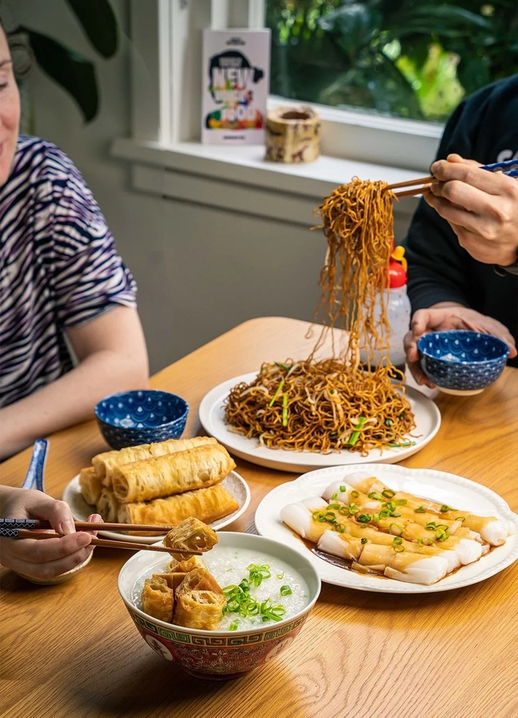

The Ultimate Food Guide for HK Students
What students actually eat for breakfast in Hong Kong — sets, prices, and what to order at a cha chaan teng.
Starting your day in Hong Kong is an experience all its own. For international students, the local morning routine is a fantastic way to immerse yourself in the culture. The best part? A traditional Hong Kong student breakfast is incredibly affordable and delicious.
Nobody in Hong Kong eats a sit-down breakfast on a Tuesday. They eat fast, cheap, and at a cha chaan teng, the local “tea restaurants” that are everywhere near university campuses.
The classic student breakfast is the set: macaroni in soup with ham (yes, macaroni, yes, for breakfast), scrambled eggs, toast, and a milk tea. Sounds weird, costs about HK$35–45, and after two weeks you’ll defend it to other exchange students.
